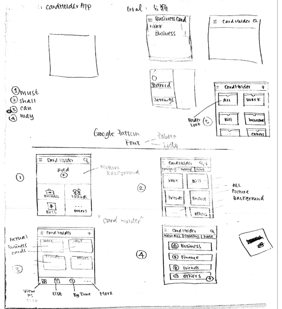
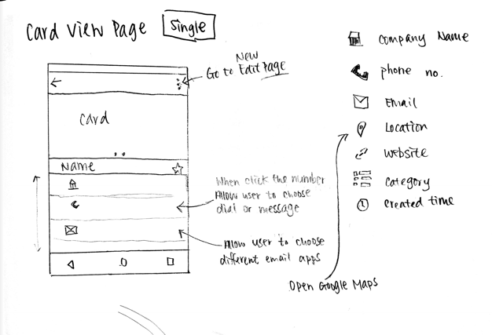
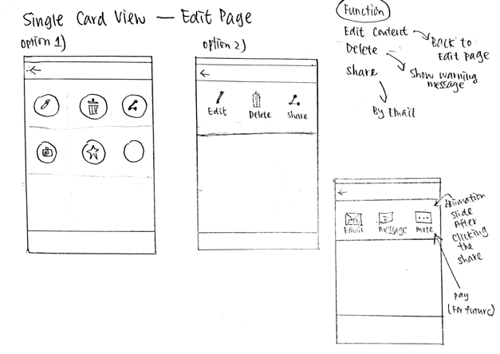
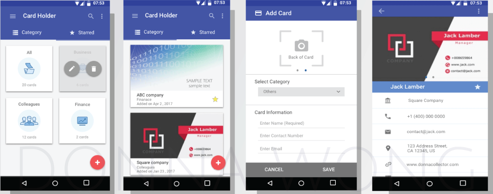
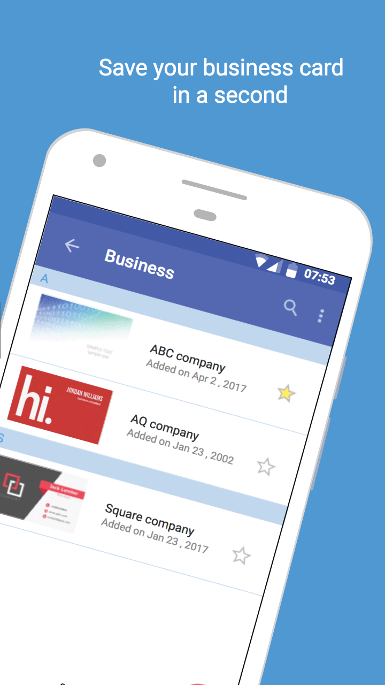
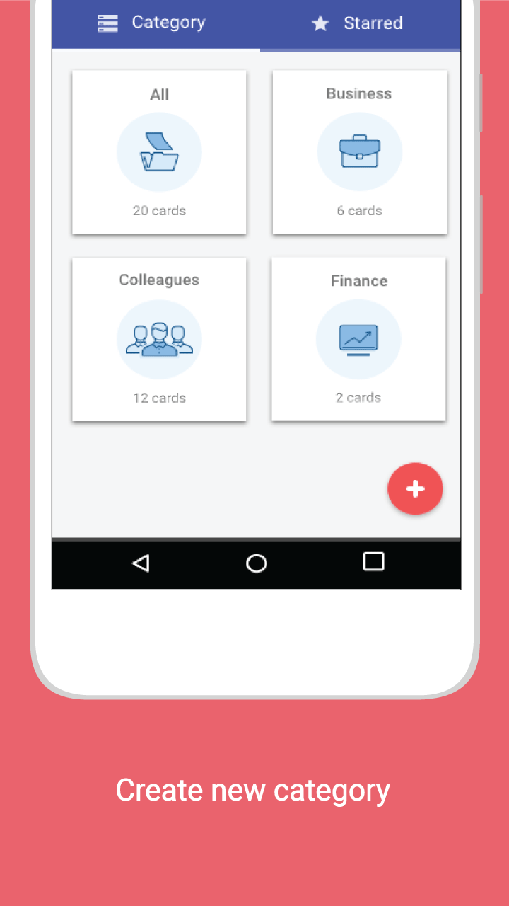
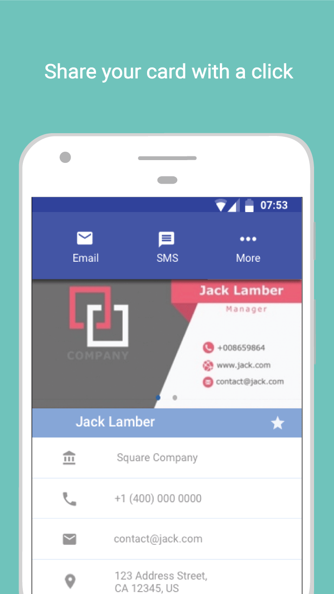
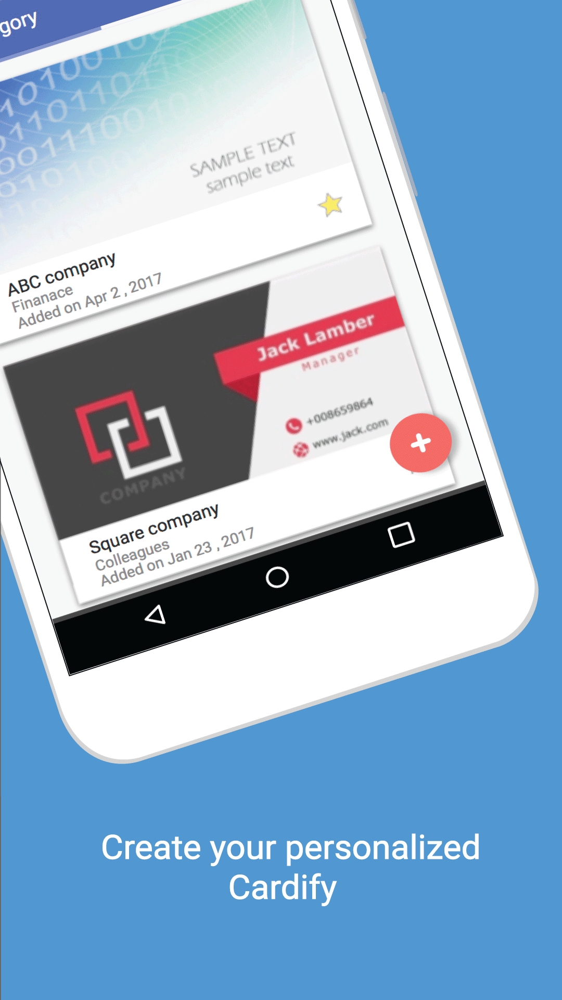

Cardify
Summary
This is a personalized android mobile application called “Cardify”. I collaborated with a software developer, Joe Ma. My role in this project is a app designer, user interface designer, and usability researcher.
Cardify is an Android mobile app where it saves and shares all your business card contacts. It is designed to be simple, fast, and efficient for anybody who uses Android devices.
Process
- Identify Functional Requirements/ Non-functional Requirements
- Identify Stakeholders
- Paper Sketching & Wireframes
- User research
- Usability Testing
- Iterations
User Research
I did a few interviews with selected users in different range of age and expertise in computer. I recorded and analyzed the user activity and asked a wide range of questions in order to know what are the pros and cons in our app. The reason why I monitored/recorded their user activity is to observe what process they were struggle with since user’s activity or body language an always reveal their thoughts and feelings.
1st Persona
Jay Lee, 23 years old
He is a student and part time worker at Edmonds Community College. He likes the idea that he can save all cards such as insurance card, auto repair card, ID card and etc. He is familiar with technologies and he could handle inconsistent and exotic interfaces in most cases. Direction and instruction would not be the main concern for him. The proposition and the explicit function would be the attracting part of our app. We have to strongly maintain our aim and to create one simple, special mobile app.
2nd Persona
Vania Koba, 30 years old
She is about 30 years old and she is working in Amazon as a software engineer. She likes the idea that she can share cards and make contacts easily with our app. However, she has a busy schedule which she cannot afford too much time for learning a new app. In this case, consistency and conformity is essential to fit users like Vania. We should not create extraordinary or special animation where no users have experience before. Also, simple and obvious layout settings can help users spot the location faster since it increases the visibility.
3rd Persona
Philip Wong, 58 years old
He is about 58 years old and he is the CEO of a watch company. He really likes the idea that he can save all the card in one place. However, He is not familiar with technologies and may have general problems with computer interfaces. Although Philip knows the common function of mobile interfaces, it is better to anticipate the problems first. To increase the usability of our app to business workers as Philip, we have to provide a very high level of instruction or direction in order to fit their preferences. We can provide a video tutorial and set a FAQ section on the app where we can answer most of the usability questions.
User Flow
Sketches


Designs




